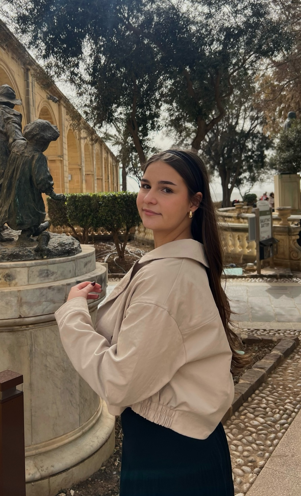

Moje ime je Lena Dragutinović, idem u 3. razred gimnazije. Imam 17 godina i fan sam Malice Mizer-a od svoje 14. godine. Volim muziku, završila sam osnovnu muzičku školu i sviram klavir i ukulele. Umetnička sam duša, volim slikanje, crtanje, pisanje, čitanje i heklanje. Nadam se da ću se baviti arhitekturom kad odrastem. Vešta sam i u stranim jezicima, pored srpskog govorim i engleski, i pomalo francuskog i nemačkog.
Knjige koje bih vam preporučila
"Paukova mreža" -Laš Kepler
"Čovek iz ogledala" -Laš Kepler
"Oče, pomozi mi" -Arhimandrit Rafail
"Definitivni vodič kroz govor tela" -Alan i Barbara Riz
"Počuj me sad" -otac Predrag Popović
Moje omiljene pesme

Lena Dragutinović
"Mayonaka ni Kawashita Yakusoku" -Malice Mizer
"Syunikiss" -Malice Mizer
"Shiroi" -Malice Mizer
"Bel Air" -Malice Mizer
"Gardenia" -Malice Mizer
"...IN HEAVEN..." -Buck-Tick
"Kore wo izon to yobu nara"-Mejibray
"Fire in my heart" -Escape from New York
"Belle" iz mjuzikla "Notre-Dame de Paris"
"Supermassive Black Hole"-Muse
Predmeti koje volim
Fizika
Termodinamika
Elektricitet
Magnetizam
Matematika
Stereometrija
Analitička geometrija
Trigonometrija
Kvadratne jednačine
Biologija
Genetika
Molekularna biologija
Fiziologija
Građa i funkcija ćelije
Informatika
Python programiranje
Word obrada teksta
HTML i CSS web dizajn
Excel tabele
Muzička kultura
Barok
Renesansa
Impresionizam
Moji hobiji i veštine
Heklanje
Sposobnost pletenja vunice ili konca i pretvaranja ih u odevne predmete i aksesoare. Bavim se ovim oko 3 godine i zaista uživam u tome.
Sviranje
Sposobnost proizvođenja smislenog zvuka na instrumentu. Kao što sam rekla, sviram klavir već 8 godina a ukulele manje od godinu dana. Savladati ukulele je vrlo jednostavno.
Pevanje
Sposobnost proizvođenja smislenog zvuka svojim glasom. Pogotovo volim horsko pevanje, ceo život pevam u horovima a trenutno sam član školskog i crkvenog hora.